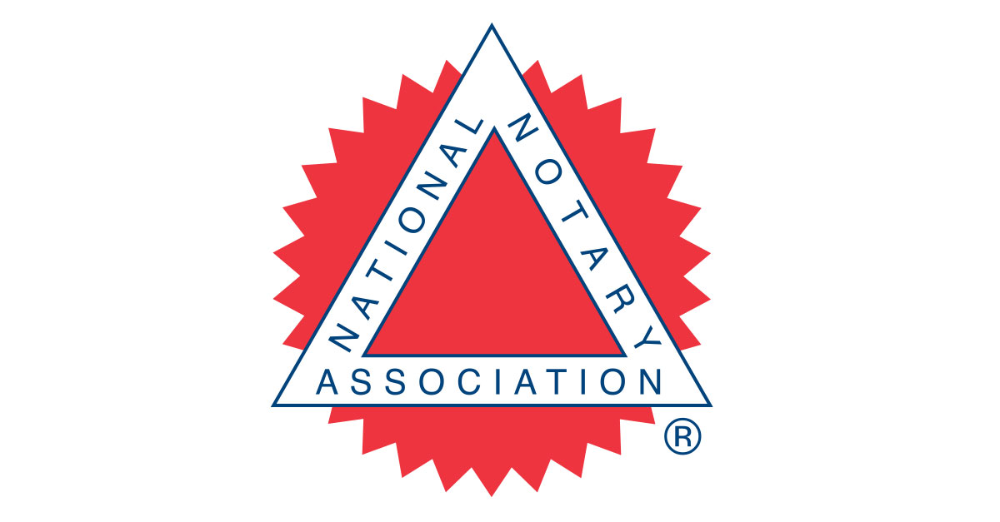

<!--I started with a boiler point on every page and created a title per instructions.-->

<!DOCTYPE html>
<html lang="en">
<head>
    <meta charset="UTF-8">
    <meta name="viewport" content="width=device-width, initial-scale=1.0">
    <title><h1>JM BOOKEEPING AND NOTARY SERVICES</h1>
        <Tbody</Tbody></h1></title>
        <link rel="stylesheet" href="styles.css">
    

    
</head>
<body>
    
</body>
</html>


<!--Created a Header with H1 heading which enlrages the text-->

<header><h1>JM BOOKKEEPING AND NOTARY SERVICES</h1></header>


<main>
<div>
<p>Flexible Mobile Notary and Bookkeping Services. Feel free to contact with any questions!</p>
</div>

<div>
<h2>Offered Services</h2>
<ul>
<li>Mobile Notary Services across East Valley, Phoenix and West Valley.</li>
<li>Video and Phone interactions to assist with questions</li>
<li>Quickbooks Bookkeeping services</li>
<li>Flexible times during day to assist with bookkeping and notary.</li>
</ul>
</div>


<!--reated a block for the images as well and also attached images based on their file located. 
I extrated images from the lab 01 and added the images to the week 1 project folder. 
I created a folder for images and moved the images to the folder.  --->

<div>
<h2>Flexible Mobile Notary and Bookkeping Services. Feel free to contact with any questions!</h2>
        


<div>
<h2>Who are we?<h/2>

<p>My name is Jessica and I have been working as a notary public for the State of Arizona for 2 years. 
    I spealize in loan signings and also quickbooks for bookkeping. If you are interested in reaching out
    to book any services, please feel free to contact me. </p>
</div>


<!--I created an unordered list using the ul command which created bullet point list-->
<div>
<h2>What to bring to your appointment<h/2>
<ul>

<li>Please bring Photo ID or Drivers License.</li>
<li>Please ensure all documents notarized are filled out.  </li>
<li>We do take cash and we accept debit and credit cards.</li>
</ul>
 </div>


<!--I created an ordered list using the ol command that numbers the list.--->
<div>
<h3>Interested in becoming a notary? Check out these resources.</h3>
    
<ol>

<li><a href="https://azsos.gov/business/notary">Arizona Secretary of State
<li><a href="https://www.nationalnotary.org">National Notary Association
<li><a href="https://www.notarycoach.com/">Notary Coach
</ol>



<br>

<!--Created a form for the Contact me page-->


<p><a href="hours.html">Hours of Operation</a></p>
<p><a href="contact.html">Contact Me</a></p>


<!-- FOOTER -->

<p>Copyright (c) 2024 Promineo Tech
Author:  Jessica Montgomery</p>
</main>
</body>
</html>